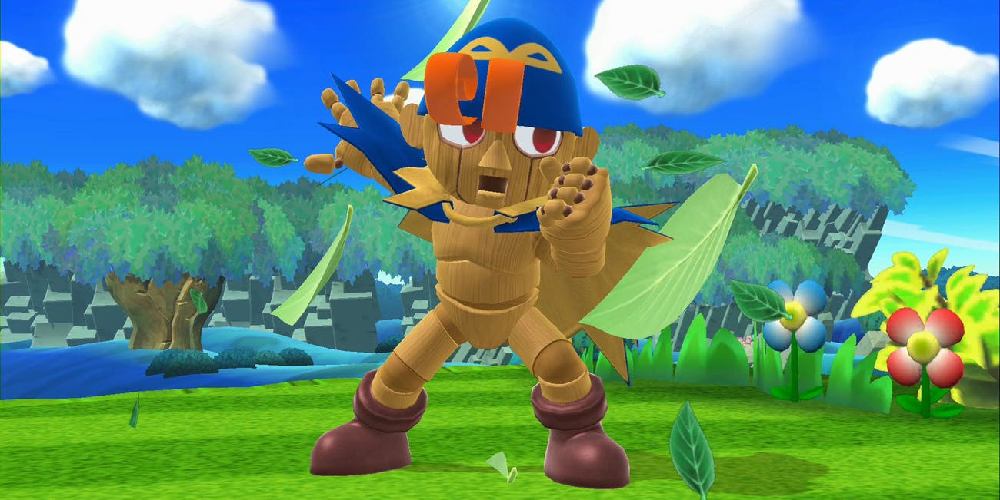

Latest News
Geno leaks leads to certainty of DLC Fighter 5
8th January 2020
Latest on who the next DLC fighter will be to finish off the first fighter pass
An alleged 4chan leak claims a Nintendo Direct is just around the corner, and an update to the eShop suggests Smash Bros. Ultimate will be a major part of the upcoming announcements. Challenger Pack 5 is now available for purchase in the store for $5.99, with a tentative release date of February 29. Nintendo previously announced the fifth DLC fighter would launch by the end of February, but the fact that a placeholder is already in the eShop suggests the company is gearing up for an imminent Direct. But when could it take place? A dubious post posted to 4chan on January 1 claimed Nintendo’s first 2020 Direct would take place the first week of the year, which clearly didn’t happen. It also mentioned that the new fighter would be Travis Touchdown from the No More Heroes franchise and that Nintendo would updated gamers on eleven upcoming and unannounced Switch titles, like Animal Crossing: New Horizons and a Fire Emblem DLC.
Geno has been a suspicion of one of the new DLC fighters for a very long time now, but we are getting closer and closer to discovering whether this will actually come into fruition. Nintendo developer Masahiro Sakurai has remained quiet about who the next fighter will be but the community is eager that he will show off who will join the cast of 76.